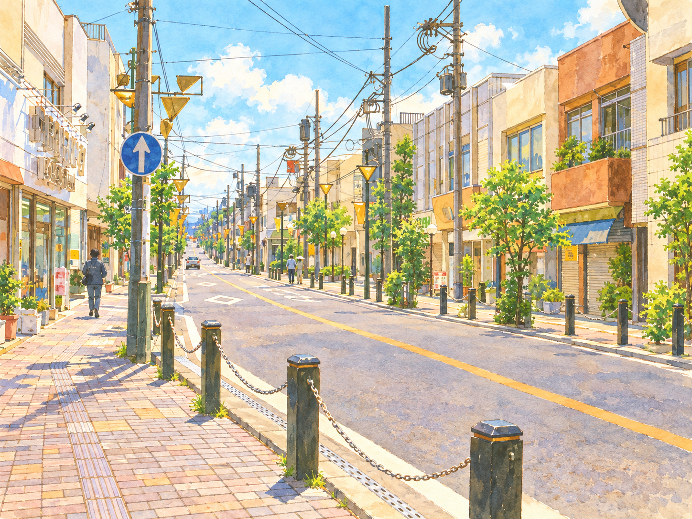
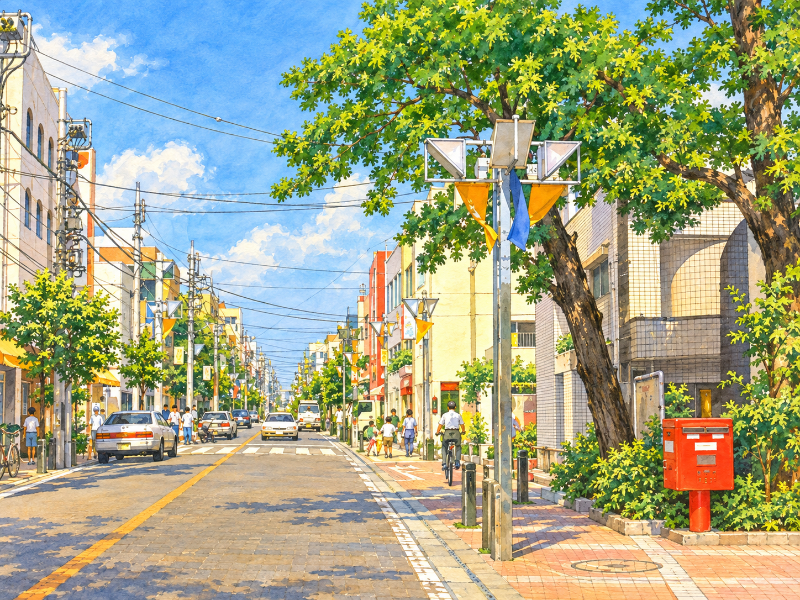

HIGASHIRINKAN · PEOPLE & PLACES
いつものまちに、
出会いがある。
いつもの道から少し変えて 視線を上げて
お店に立ち寄る。誰かと話す。
東林間の小さな「好き」をつなげて、
まちの明日をみんなで育てよう。
神奈川県相模原市 · 東林間


MEET YOUR NEIGHBORHOODまちを育てる＋お店と出会う＋人と出会う＋本と出会う
HIGASHIRINKAN · PEOPLE & PLACES
いつもの道から少し変えて 視線を上げて
お店に立ち寄る。誰かと話す。
東林間の小さな「好き」をつなげて、
まちの明日をみんなで育てよう。
神奈川県相模原市 · 東林間

